Sèrie entrenament · Fonaments
L'ull sempre
a la cistella.
a la cistella.
Repeteix-ho cada dia, 10 minuts.
Aquesta guia s'ha reconstruït sobre el manual oficial del club (CB_Grup_Barna_Identitat_Visual_2026_v1.1.pdf,
juliol 2026) — ja no és una reconstrucció des de zero, és la seva aplicació directa als formats de story/portada.
Bebas Neue pel titular, Montserrat per a tota la resta. Mai una tercera font.
Bebas Neue mai per a paràgrafs llargs — és una font de titular, no de lectura.
Evitar contorns, ombres i inclinacions decoratives sobre el text.
Quines lletres i quina mida porta cada element, i en quin ordre es llegeixen — de dalt a baix, per a cadascuna de les dues plantilles.
.plate (anunci d'una persona) o .veil (sèrie recurrent) al davant.Plantilla confirmada amb peces reals (“GAMEDAY” i “DIA DE PARTIT”, Sènior vs C.E. Sant Nicolau). Neix d'una referència explícita: el matchday de @fcbbasket — mà estesa a càmera i els dos escuts com a element central. L'artwork encara no està incrustat en aquest arxiu.
Portades amb foto (fitxatges, renovacions, sèries recurrents): escut a dalt-dreta, ~150px sobre canvas de 1080px, marge 64px.
Grans anuncis de fons pla (ascensos, campanyes de pertinença, presentacions de temporada): escut centrat a la part superior. No dalt-dreta.
Mai reconstruir, redibuixar o aproximar l'escut amb IA. Zona de protecció: x = 20% de l'amplada de l'escut. Mida mínima 18mm impressió / 64px digital.
Aquestes són peces ja publicades pel club, tal com són — no s'han reconstruït amb el sistema d'aquesta guia. Es mostren aquí com a referència real de com queda cada categoria (entrenador/a, Sènior B, Supercopa). Per generar una peça nova, fes servir la recepta de la secció 08 amb el bloc pastilla+etiqueta — no reconstrueixis aquestes.
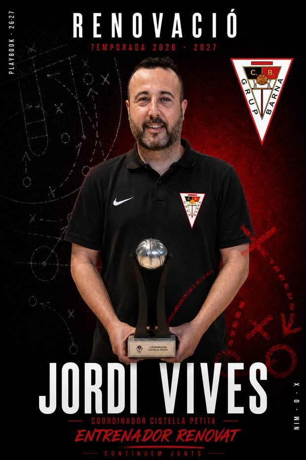
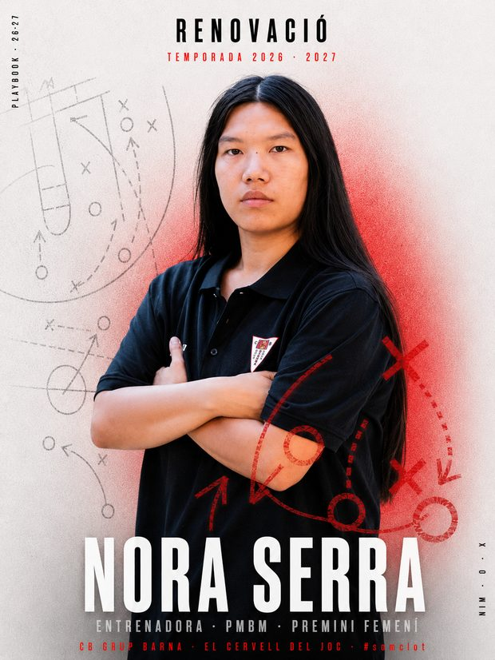
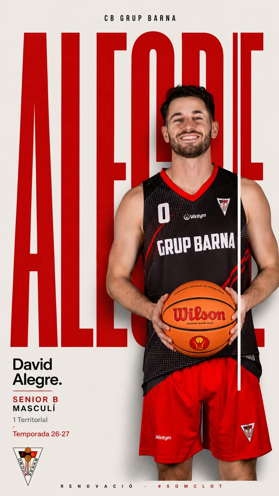
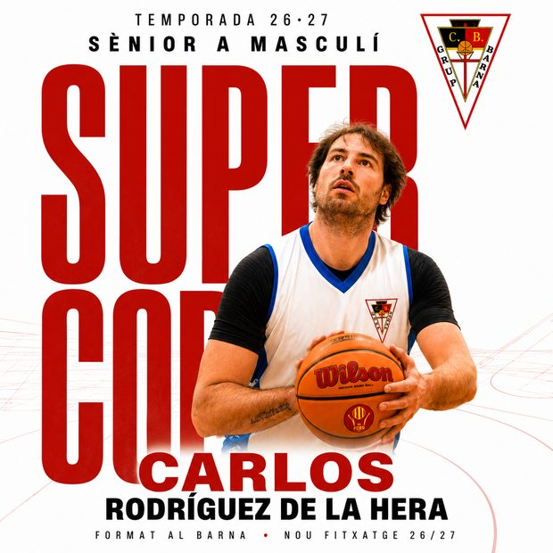
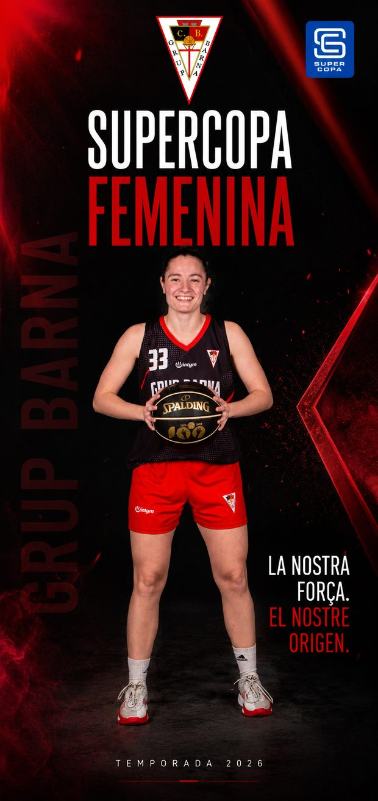
Aquest sí és el sistema d'aquesta guia — fes-lo servir quan es generi una peça nova des de zero (sèrie recurrent, cap. XX). Foto real + vel, nom de la sèrie i capítol sempre visibles.
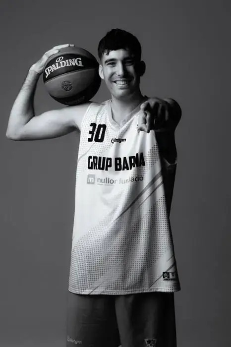
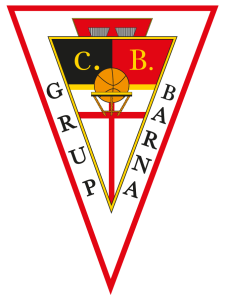
Per a ascensos, campanyes de pertinença, presentacions de temporada i fites del club. El missatge tipogràfic és el protagonista — fons pla (roig/negre/blanc), escut centrat a dalt, titular central gran i condensat, un sol bloc cromàtic d'accent, text secundari màxim 2–3 línies, firma inferior constant. No barrejar amb el llenguatge de sèrie (sense pastilla, sense etiqueta CAP.).
Segons aparador-perfil-cbgb, els 3 posts fixats al perfil fan una feina diferent cadascun.
Les 3 portades institucionals hi encaixen exactament:
Resultat confirmat, sense necessitat de conèixer cap nom.
Fons negre — "Hi van els dos"S'entén sense saber cap nom — el pin més fluix dels 3 si no hi ha cara/emoció.
Fons blanc + marc — "Vols jugar?"Un barri, 34 equips, un sol escut.
Fons vermell — "Som Clot"Quan el Barna organitza, el seu logo va primer.
Mateix pes visual entre marques, no necessàriament la mateixa mida en px.
Cap logo de partner s'insereix dins la forma de l'escut del Barna. Separació mínima = zona x de l'escut.
Cada decisió d'aquesta guia respon a una raó concreta, no a preferència estètica. El fil que lliga totes les portades i cartells:
Un fons majoritàriament negre és el que fa que una peça llegeixi "club seriós, no cridaner". El vermell només guanya força perquè és escàs — si fos el color base, deixaria de significar res.
Quan tot és vermell/negre + text èpic, l'ull deixa de distingir què és important. Un sol accent per peça manté el contrast útil.
Una condensada gegant és el registre visual dels pòsters NBA/Nike — comunica impacte en poc espai, ideal per a miniatures que s'han de llegir a 300px. Montserrat no competeix mai amb ella: és neutra expressament, perquè la informació es llegeixi sense soroll.
A les peces amb foto (sèrie, gameday), l'escut és una insígnia discreta a la cantonada — la cara de qui surt a la peça no hi ha de competir. A les peces institucionals no hi ha foto, així que l'escut centrat pot ser part de la composició simètrica sense robar protagonisme a ningú.
Un anunci d'una persona ha de semblar ella mateixa, sense filtre — la placa només toca la zona de text. Un capítol de sèrie recurrent es beneficia del vel perquè la graella s'ha de llegir com "un sol programa", sigui quina sigui la foto d'aquella setmana.
Un partit té una necessitat d'informació diferent (dos escuts, dia, hora, lloc) que no encaixa ni al llenguatge de sèrie ni a l'institucional — forçar-lo en un dels dos trencaria la jerarquia lògica del cartell.
Nivell + ganxo extern + amplitud és la seqüència mínima perquè un desconegut decideixi seguir el club en 3 segons. No és una tria estètica — és la resposta directa al diagnòstic real (0,03% de conversió) que va motivar aquest sistema.
Dues regles noves per a la plantilla reutilitzable (Radar Barna i les 3 institucionals): (a) el marc vermell ja no és exclusiu del fons blanc — tota peça en porta, sigui quin sigui el fons; en fons vermell s'hi afegeix un filet fosc intern perquè el marc es distingeixi igualment. (b) El bloc de contingut (eyebrow+titular+kickline) es reancorat més amunt perquè sobrevisqui el retall quadrat/4:5 de la graella del perfil: Instagram talla ~285px dalt i baix en el retall 4:5 del feed, i ~420px en el retall 1:1 antic — el títol ha de quedar-hi sencer, no només al 9:16 complet. Escut, pastilla i etiqueta queden a dalt i es perden en aquest retall: és el preu ja acceptat de mantenir l'escut top-right (regla ④) — el peu de firma, també decoratiu, es perd igual. Aquesta regla no s'aplica retroactivament a la galeria "Portades de sèrie" (peces reals, sense retocar): aquelles ja estan publicades i es mostren tal qual.
Pot semblar que cada anunci s'ha dissenyat "diferent perquè sí". És el contrari: totes les peces comparteixen el mateix ADN (escut oficial, Bebas Neue, paleta roig/negre/blanc, firma fixa) i el que varia és una sola cosa cada vegada, escollida amb criteri. El detall:
L'staff tècnic s'anuncia amb el seu llenguatge propi — la pissarra tàctica de fons, que diu "aquesta persona pensa el joc" i el distingeix a l'instant d'un anunci de jugador. Jordi Vives va sobre pissarra fosca i Nora Serra sobre pissarra clara: no són dos dissenys, és el mateix amb el fons invertit. Això manté el reconeixement de sèrie (qualsevol soci veu que són "de la mateixa col·lecció") i alhora evita que a la graella semblin la mateixa peça repetida.
Les dues plantilles sènior fan servir el mateix mecanisme — un wordmark condensat gegant darrere la foto — però amb subjecte diferent, perquè la notícia és diferent. A la Supercopa, la notícia és la competició: el wordmark és "SUPERCOPA" i s'hi afegeix el cobranding oficial. A la renovació de Sènior B, la notícia és la persona: el wordmark és el cognom del jugador ("ALEGRE"). Resultat: mateixa família visual, però qualsevol persona distingeix a primer cop d'ull — sense llegir res — si el club anuncia una fita d'equip o una renovació individual.
Mateixa escala tipogràfica, mateix nivell de producció i d'acabat; l'única variació és la inversió de fons (clar el masculí, fosc amb textura vermella el femení). Cap secció és la versió "reduïda" de l'altra — la paritat que el manual declara com a valor ("el femení és estructura, no campanya") aquí és una decisió de disseny verificable, no una frase. I la inversió clar/fosc fa que les dues peces convisquin a la graella sense anul·lar-se mútuament.
Amb una plantilla única, la graella cau en fatiga per repetició. Amb una plantilla nova per a cada peça, es perd el reconeixement de marca. El sistema resol l'equilibri: ADN fix (escut, tipografia, paleta, firma) + una variació controlada per categoria (el fons a l'staff, el subjecte del wordmark als sèniors). Cada categoria té identitat pròpia i tot segueix sent, inconfusiblement, Barna.
Els cartells s'agrupen per secció del club, no per estil. Cada grup té un registre propi — el que canvia entre grups no és el gust, és què és la notícia: la persona, la fita, el contingut o el club. Dins de cada grup, una fitxa per peça amb la composició, el fons, les lletres i la raó de cada decisió.
La notícia és qui dirigeix. Plantilla de pissarra tàctica: el llenguatge propi de l'staff — un jugador s'anuncia amb el cos, un entrenador amb el que pensa. Una sola arquitectura amb dos fons (fosc i clar) perquè el parell no es repeteixi a la graella.
Aquí hi ha el diferencial del club: el CB Grup Barna anuncia entrenadores amb la mateixa plantilla, escala i producció que els entrenadors. La majoria de clubs del nostre entorn no anuncien entrenadores — només publiquen cos tècnic masculí.
Eix central simètric: “RENOVACIÓ” espaiat a dalt, escut a la dreta, figura centrada amb els braços creuats mirant a càmera, i el nom gegant tocant la vora inferior. Als dos marges verticals hi ha marginalia en petit (“PLAYBOOK · 26·27” a l'esquerra, “X · O · MIN” a la dreta) que reforça la metàfora de quadern tàctic. La postura i l'eix central transmeten autoritat tranquil·la — no cal acció per dir “aquest home mana a la pista”.
Pissarra tàctica negra amb jugades guixades en blanc i marques en vermell: el llenguatge propi de l'staff. Un jugador s'anuncia amb el cos; un entrenador, amb el que pensa. El halo vermell darrere el cap desenganxa la figura del negre.
“RENOVACIÓ” en condensada espaiada (registre solemne), nom en condensada gegant blanca, càrrec en tracked petit. El peu és una escala de quatre línies: nom gegant → càrrec (“COORDINADOR CISTELLA PETITA”, vermell i entre filets) → estat en cursiva pesada (“ENTRENADOR RENOVAT”) → claim entre filets (“CONTINUEM JUNTS”). La cursiva inclinada és l'únic moment de tot el sistema on la tipografia es permet un gest, i queda reservada a la línia d'estat.
Distingeix el cos tècnic dels jugadors a primer cop d'ull sense sortir de la marca. El fons fosc dona pes i veterania al perfil sènior de l'staff.
Mateixa arquitectura exacta que la peça de Jordi Vives: “RENOVACIÓ” dalt, escut dreta, figura central braços creuats, nom gegant baix amb el càrrec a sota (“ENTRENADORA · PMBM · PREMINI FEMENÍ”) i la firma al peu.
La mateixa pissarra tàctica, invertida: traç fosc i vermell sobre clar, amb el mateix halo vermell. No són dos dissenys: és un de sol amb el fons girat.
Mateixa escala i jerarquia que la peça masculina — mateix cos de nom, mateixa posició, mateixa producció. El peu s'adapta al contingut de cada peça: aquesta tanca amb la firma del club i el hashtag (“CB GRUP BARNA · EL CERVELL DEL JOC · #somclot”). Que una entrenadora s'anunciï amb la mateixa plantilla que un entrenador és el diferencial del club: la majoria de clubs del nostre entorn només publiquen cos tècnic masculí.
El parell fosc/clar manté el reconeixement de col·lecció i evita que a la graella semblin la mateixa peça repetida (fatiga per repetició). I la paritat és literal: mateixa producció, mateixa escala, cap versió “menor”.
La notícia és la fita, no la persona. Registre Supercopa: la competició mana sobre el nom, hi ha cobranding quan l'organitza una entitat externa, i el jugador o jugadora hi surt com a representant de l'equip. És el registre més alt del sistema i per això queda reservat: si s'usés per a cada renovació, deixaria de significar res.
“SUPER COPA” gegant en vermell, amb el jugador col·locat entre el text i el fons — la superposició crea profunditat i integra persona i competició en un sol pla. Kicker superior amb temporada i categoria; nom en vermell + cognoms en negre a baix.
Blanc amb línies de pista subtils en vermell: aire, claredat i un context esportiu sense soroll.
El wordmark és la competició, no el jugador — condensada gegant. El nom va en condensada mitjana a baix: primer la fita, després qui la protagonitza (“FORMAT AL BARNA · NOU FITXATGE 26/27”).
Quan la notícia és la competició, el wordmark gegant és el seu nom. Mateix mecanisme que el cartell d'Alegre (wordmark + foto), subjecte diferent — la família visual es manté i el tipus de notícia es distingeix sense llegir res.
Jugadora centrada de cos sencer, “SUPERCOPA / FEMENINA” a dalt en dues línies, “GRUP BARNA” vertical gegant com a textura lateral, i el claim (“LA NOSTRA FORÇA. / EL NOSTRE ORIGEN.”) alineat a la dreta a l'alçada de la jugadora.
Negre amb textures i llums vermelles — ambient d'esdeveniment gran. La profunditat del fons fa que la peça sembli de competició professional.
“SUPERCOPA” en blanc i “FEMENINA” en vermell: el mot que distingeix la fita és el que porta el color. Cobranding correcte segons manual: escut Barna centrat a dalt (el club primer) i logo oficial de la Supercopa a la cantonada, mai dins l'escut.
La inversió fosc/clar respecte del cartell masculí és paritat per disseny: mateixa escala tipogràfica, mateixa producció, cap secció és la versió reduïda de l'altra — i les dues peces conviuen a la graella sense anul·lar-se.
La notícia és la persona. Registre editorial, proper i premium, no d'espectacle: el cognom es converteix en el monument tipogràfic i la resta d'informació es queda petita i ordenada. Diu “aquest jugador importa” sense demanar prestada l'èpica de la Supercopa.
És un parell de colorways, igual que el cos tècnic amb la pissarra fosca i clara: masculí = fons crema amb el cognom en vermell, femení = fons vermell amb el cognom en blanc. Mateixa retícula, mateixa línia vertical blanca, mateix bloc informatiu, mateix peu — només s'inverteix el color. Convenció de nom: primer el cognom com a wordmark gegant, el nom de pila a sota.
El cognom “ALEGRE” com a wordmark gegant vermell omplint tot el llenç, amb la foto neta per davant. El bloc informatiu és petit i va a baix a l'esquerra; una línia vertical fina blanca travessa la peça — un gest d'editorial de revista, no de cartell d'estadi.
Clar i calmat. La renovació d'un jugador de Sènior B no és una fita de competició: el registre és proper i premium, no d'espectacle.
Aquí el protagonisme tipogràfic és el wordmark; per això el nom al bloc informatiu va en una grotesca rodona amb punt final (“David Alegre.”, “renovació.”) — el punt dona to de declaració serena, i no competeix amb el cognom gegant.
Quan la notícia és la persona, el seu cognom es converteix en el monument tipogràfic. Diu “aquest jugador importa” sense inflar-ho amb èpica prestada — i deixa el registre Supercopa reservat per a les fites d'equip.
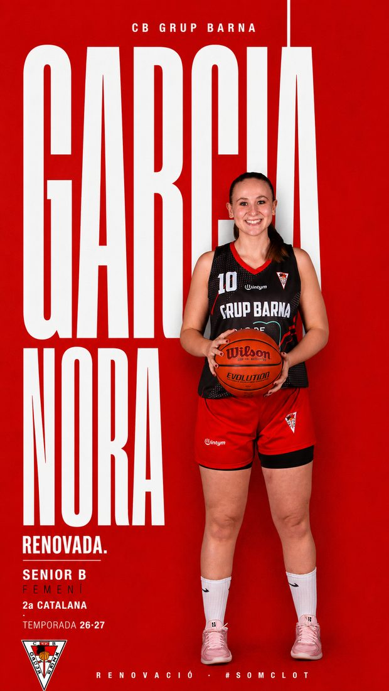
Idèntica a la peça de David Alegre: “CB GRUP BARNA” centrat a dalt, cognom gegant de vora a vora, jugadora retallada al centre-dreta, línia vertical fina que travessa la peça, bloc informatiu a baix-esquerra, escut petit a baix-esquerra i peu “RENOVACIÓ · #SOMCLOT”. El cognom (“GARCIA”) va damunt del nom de pila (“NORA”), com a l'altra peça.
Vermell ple amb el cognom en blanc — la inversió exacta del colorway masculí (crema amb el cognom en vermell). No és una peça diferent: és la mateixa plantilla amb els dos colors intercanviats.
Mateixa jerarquia que la peça masculina: wordmark condensat gegant, nom en grotesca rodona amb punt final (“RENOVADA.”), i el bloc de categoria en mono petit (SÈNIOR B · FEMENÍ · 2a Catalana · Temporada 26·27). El participi es concorda — “renovació.” / “RENOVADA.”
El parell crema/vermell fa la mateixa feina que el parell fosc/clar del cos tècnic: evita que dues renovacions seguides es llegeixin com la mateixa peça repetida a la graella, i manté la paritat literal — mateixa escala, mateixa producció, cap secció amb versió reduïda.
La notícia és el contingut, no qui hi surt. És l'única família amb vel vermell/negre sobre tota la foto, i l'única amb capçalera fixa (nom de sèrie + capítol): el que fa que capítols diferents es llegeixin com una col·lecció i no com peces soltes.
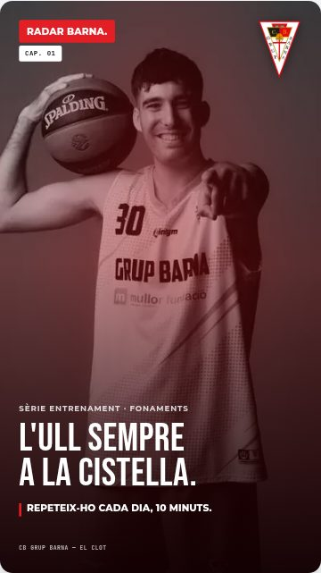
Pastilla amb el nom de la sèrie a dalt-esquerra i etiqueta de capítol just a sota (“CAP. 01”), escut top-right, i el missatge del capítol a baix. La capçalera no canvia mai entre capítols: només el número i el text de baix.
Única família de peces que porta vel vermell/negre sobre tota la foto. No és decoració: és el que fa que 20 capítols amb 20 fotos diferents es llegeixin com una sola col·lecció a la graella.
Mateixa escala que la resta del sistema, però el titular baixa de mida respecte un anunci de fitxatge: aquí la notícia és el contingut, no la persona que surt a la foto.
Una sèrie només funciona si es reconeix abans de llegir-la. La pastilla fixa + el vel constant fan de “capçalera de programa”; el lector sap que és Radar Barna d'un cop d'ull, com qui reconeix la sintonia d'un programa.
Totes comparteixen la mateixa plantilla (pastilla amb el nom de la sèrie + etiqueta de capítol + vel): el que canvia entre elles és de què va la notícia. Les marcades com a “peça real” ja s'han publicat; la resta hereten exactament la mateixa plantilla i encara estan per produir.
Connecta una onada global (WNBA, Caitlin Clark) amb el que fa el club. Foto de referència externa amb vel, i la baixada a terra al kickline: “Aquí, també.” És la sèrie que dona context i ambició al projecte femení sense inventar-se fites pròpies.
Entrenaments, matinades, la banqueta, el que no surt al marcador. Fotos d'acció real, sense posar. És la sèrie que construeix pertinença: qui la veu entén que darrere d'un resultat hi ha mesos de gent.
Format il·lustrat, no fotogràfic: escena de pavelló dibuixada amb text superposat (“Ara el pavelló també és seu · Hi ha equip. Hi ha entrenadores. Hi ha camí.”). Registre càlid, sense marcadors ni estadístiques. Funciona: és de les peces amb més interacció de la sèrie.
Uneix escoleta i sènior en un sol relat: el mateix escut a totes les edats. Funciona amb parells (abans/ara, petit/gran) i és la prova visual del “pipeline” del club.
Variant de la plantilla de cos tècnic aplicada a la base femenina. Mateixa pissarra tàctica, mateixa escala que un entrenador sènior — la paritat es demostra no fent-ne una versió reduïda.
Contrapès de la sèrie femenina perquè cap de les dues sembli l'excepció. Mateixa plantilla i mateixa freqüència: si una secció té sèrie pròpia i l'altra no, el sistema ja està dient alguna cosa que no volem dir.
La notícia és el club. Fons pla sense foto, escut centrat a dalt: registre d'anunci gran. Cadascuna fa una feina de pin diferent al perfil (nivell, ganxo extern, amplitud). És el registre que es desgasta més ràpid si s'abusa: convé reservar-lo per als anuncis que realment ho són.
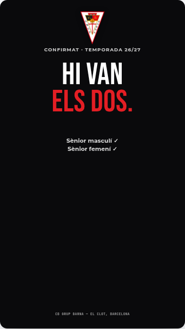
Escut centrat a dalt, eyebrow de context, titular central gegant i els dos checks com a únic text secundari. Tot a l'eix — cap element flotant.
Negre pla: solemnitat. Un resultat confirmat no necessita decoració, necessita pes.
Titular en condensada gegant amb l'accent vermell només a “ELS DOS.” — la dada que importa. Secundari en Montserrat, dues línies.
És el pin de NIVELL de l'aparador: un desconegut ha d'entendre en un segon que el club juga al màxim nivell català, sense conèixer cap nom.
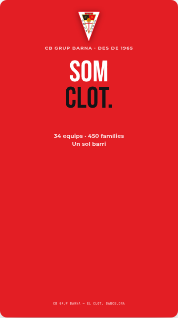
La més despullada de totes: escut, dues paraules, tres dades. El buit és el missatge — no cal justificar la pertinença.
L'única peça del sistema on el vermell és el fons sencer: el crit d'identitat es permet el color d'identitat. L'accent s'inverteix a negre (“CLOT.”) perquè hi hagi contrast.
Condensada gegant centrada; “34 equips · 450 famílies” en Montserrat com a única prova factual.
És el pin d'AMPLITUD: diu “hi ha més d'un equip, això és un barri sencer”. Advertència d'ús: el registre èpic en estàtic es desgasta si es repeteix — reservar-lo, no fer-ne el fons de pantalla del perfil.
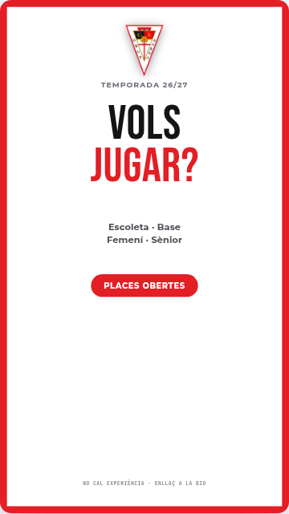
Escut centrat, pregunta directa com a titular, les quatre etapes del club com a resposta, i l'únic botó CTA de tot el sistema (“PLACES OBERTES”).
Blanc pur amb el marc vermell obligatori del manual: la peça més oberta i respirada, perquè el missatge és una invitació, no una declaració.
“VOLS” en negre, “JUGAR?” en vermell — la pregunta sencera es llegeix en un cop d'ull i l'accent cau al verb. Peu en mono petit: “No cal experiència”, la frase que treu la por.
És el pin de GANXO EXTERN i l'única peça de conversió directa: per això és l'única amb botó. Tot el disseny treballa perquè la resposta mental del lector sigui “sí”.
Peces reals d'altres clubs, mirades per situar les nostres decisions. (Descrites a partir de les peces publicades; artwork no incrustat.)
Mateix club, mateixa competició, mateixa temporada, dues peces amb nivell de producció diferent.
Ningú escriu “fes la femenina més senzilla”, però el resultat visual ho diu igualment, i és el que llegeix qui passa per la graella. És el patró dominant del bàsquet de base: el femení surt amb menys producció, i les entrenadores pràcticament no s'anuncien — la majoria de clubs només publiquen cos tècnic masculí.
Aquí hi ha el nostre diferencial real: el CB Grup Barna anuncia entrenadores amb la mateixa plantilla, la mateixa escala i la mateixa producció que els entrenadors. No és un detall d'estil — és pràcticament l'única cosa que cap altre club del nostre entorn està fent.
Els clubs de referència ja treballen amb IA i retoc de cara a les peces d'anunci. No és una drecera nostra: és l'estàndard actual del sector.
A l'escoleta i la base hi ha una raó que no tenen les altres seccions: són menors. La il·lustració permet explicar l'escena — el pavelló ple, l'equip, l'entrenadora acompanyant — sense exposar la cara de cap nen ni de cap nena, i sense dependre de permisos d'imatge de cada família.
A més, el públic real d'aquestes peces no són els nens: són els pares i mares. El dibuix permet mostrar el club com voldrien que fos l'experiència del seu fill o filla, que és exactament el que estan decidint quan miren el perfil.
Si el Barça genera l'escena i retoca la cara per a un fitxatge, i el Boet ho fa fins i tot a la peça d'identitat, la imatge generada ja no és una excepció a justificar: és el llenguatge corrent del sector.
El que sí que cal mantenir és l'alternança — peça generada per crear l'esdeveniment, foto real després per confirmar-lo. És el que fa el Barça i és la manera de fer servir la IA sense que el club deixi de semblar real.
El Sant Feliuenc ha reproduït un format de vídeo nostre, com abans havia passat amb l'activació del partner
Armand Òptics. Que un rival copiï un format vol dir que funciona — el risc no és la còpia, és que el recurs
es desgasti per repetició. Quan passa, toca evolucionar el format, no defensar-lo.
Referència: instagram.com/reel/DZtvAoQR_7L
/* SÈRIE — escut top-right, pastilla+etiqueta */ <div class="story bg-{white|red|black|photo}"> <img class="photo" src="foto-real.jpg"> <div class="plate"></div> // anunci d'una persona <div class="veil"></div> // sèrie recurrent <img class="logo" src="escut.png"> <div class="pill">Nom de la sèrie.</div> <div class="tag1">Cap. XX</div> <div class="content"> <div class="eyebrow">De qui/què va</div> <div class="headline">Titular (Bebas Neue).</div> <div class="kickline"><span class="bar"></span>Frase de tancament.</div> </div> <div class="foot">CB Grup Barna · El Clot</div> </div> /* INSTITUCIONAL — escut centrat, sense pastilla/etiqueta */ <div class="story inst bg-{white|red|black}"> <img class="logo" src="escut.png"> // .inst el centra automàticament <div class="ieyebrow">Context breu</div> <div class="ititle">Titular<br><span class="acc">Accent.</span></div> <div class="isecondary">Text secundari, 2-3 línies</div> <div class="icta"><span>CTA opcional</span></div> <div class="foot">CB Grup Barna · El Clot, Barcelona</div> </div> /* obligatòria en bg-white */ .story.bg-white { border: 26px solid #E31E24; }